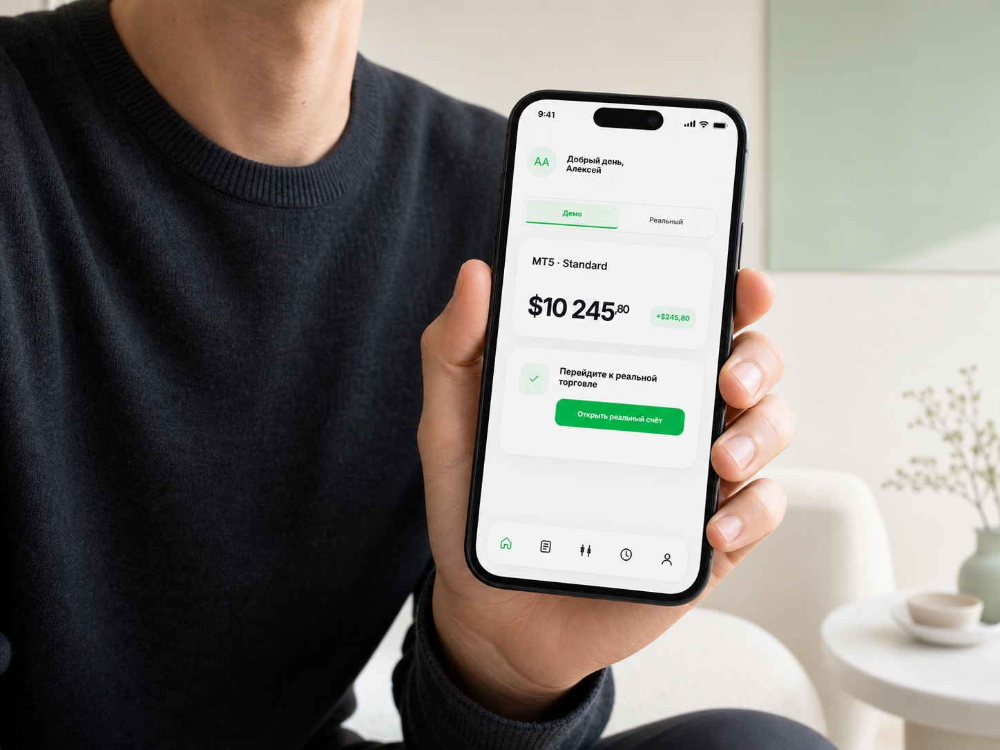

Все функции равнозначны
Счета, платежи, обучение и торговля конкурируют между собой. Пользователь не понимает, что важно сейчас.
Product design · Fintech · 2026
Редизайн личного кабинета брокера для новичка в первые 7 дней: меньше конкурирующих действий, понятный переход из демо в реальную торговлю и доверие до первого депозита.

Не маскировать сложность красивой сеткой, а определить одну главную задачу пользователя.
Сохранять контекст счёта и менять Home в зависимости от этапа активации.
Объяснять безопасность рядом с решением о депозите, а не в отдельном разделе.
Продуктовая логика
Основной пользователь уже попробовал демо, но ещё не готов рисковать реальными деньгами. Поэтому интерфейс должен не «показывать всё», а снижать неопределённость следующего действия.
Счета, платежи, обучение и торговля конкурируют между собой. Пользователь не понимает, что важно сейчас.
Новичок с демо и опытный клиент с несколькими счетами видят почти одинаковую структуру.
Пополнение выглядит технической функцией, а не безопасным продолжением уже полученного демо-опыта.
User journey
Каждое состояние отвечает на один вопрос и подводит к следующему, не меняя привычную навигацию.
Видит баланс и прогресс, может продолжить в MT5.
Получает объяснение защиты средств и минимального входа.
Home меняет главный CTA на пополнение и первую сделку.
Visual system
Белая среда, почти чёрный текст и один зелёный акцент создают ощущение контролируемого продукта. Цвет сообщает действие и успех, но не превращается в декор.
Крупные числа, короткие заголовки, спокойный вторичный текст. Типографика помогает сканировать экран сверху вниз.
Состояния компонента
Interactive prototype
Переключите демо и реальный счёт, откройте счёт, а затем пройдите по разделам нижней навигации. Интерфейс сохраняет состояние пользователя.
Итог
Показывает статус и следующий шаг вместо полного каталога возможностей.
Защита средств и лицензирование объясняются рядом с решением открыть счёт.
Все глубокие функции доступны, но больше не конкурируют с главной целью.
Дополнительно: demo → real conversion, CTR главного CTA, завершение открытия счёта и время до первого пополнения.
Deliverables